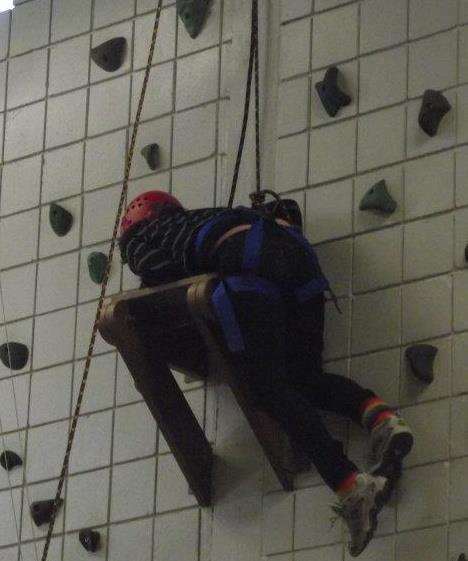

“COME ON. YOU CAN DO IT. YOU’RE ALMOST THERE. ONE LAST STEP.” These words were the last I heard before conquering my largest physical obstacle: the rock wall. At my school, all students are required to participate in a physical education program known as Project Adventure. This course was installed to build relationships and teamwork skills within each class using entertaining yet challenging games. During the second half of the marking period, we take part in climbing activities, more commonly known as “high elements.” Out of my many fears, my greatest one is acrophobia, more commonly known as an extreme fear of heights, so Project Adventure is understandably not my favorite part of the curriculum. Previously, I made it a priority on my bucket list to climb a rock wall, so when the opportunity arose for me to face my fears during my sophomore year, I abandoned initial hesitations and accepted the challenge.
Physically, I began preparing myself well in advance by learning how to properly and safely approach the wall. Soon it was time for me to attempt the feat. On the morning I was scheduled for my climb, my stomach was in knots. I was nervous, yet eager to scale the wall. After triple-checking the harness and putting my mind at ease, I started up the wall. It was very quick at first, but before I knew it the ascend became much more difficult. My arms felt like they were on fire, so I knew I had to move more quickly before the task became too much to physically endure. In the heat of the moment, I looked down. I realized how far I had gone, slipped, and fell a few feet. After re-securing my footing, I attempted to reach where my very first climb ended, but I kept falling before I could meet up with my old friend, the familiar rock. I ended the day with a total of 15 slip-ups, but my determination remained unscathed.
My second climbing opportunity started out just as I had left off: I was unable to go an inch past where my very first climb ended. Toward the end of the period, after 25 errors, I managed to finally get above my stubborn barricade. I came up with a new plan - rocketing up the wall extremely fast without any hesitation -- and it worked! I almost had reached the platform, but my foot slipped again. Luckily, I saved my hard work by grabbing a rock swiftly, so I only dipped a few inches. I took a deep breath, adjusted my footing for better leverage, and climbed as quickly as I could. Pretty soon, I felt wood under my hand! I had finally made it to the platform. I repositioned myself to make the height feel less intimidating, and I looked down to see my classmates enthusiastically cheering for me. At that moment, nothing could bring me down--not even gravity (literally)!
This feat is the accomplishment of which I am most proud, for I managed to put aside my trepidation and conquer the wall, despite the adversity I encountered. Standing there, staring down at my classmates, I knew that I was right to decide to keep trying, in spite of my fears and failures. This climb is the best story to give insight on my attitude toward almost everything thrown at me and I believe my climb is representative of my outlook for any obstacles I will face in the future. For me, how many times I fall down is not important; what matters is that I keep reaching toward my moment of glory and satisfaction at the top of the wall.
